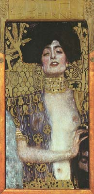
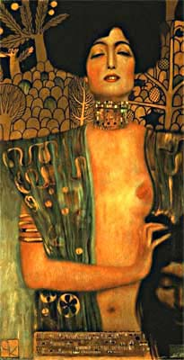
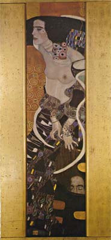
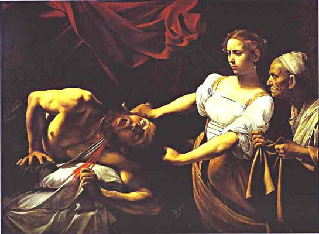

|
Paintings of Judith
|
|
Paintings of Judith
|
Judith [Heb.,=Jewess] is an early Jewish book included in the Septuagint, but not included in the Hebrew Bible, and placed in the Apocrypha of Protestant Bibles. It recounts an attack on the Jews by an army led by Holofernes, Nebuchadnezzar's general. Bethulia, a besieged Jewish city, is about to surrender when Judith, a Jewish widow of great beauty and piety, takes it upon herself to enter the enemy camp. She gains the favor of Holofernes, who seeks an opportunity to seduce her. Judith beheads him while he is drunk. Judith returns to the city with his head, and the Jews rout the enemy.
  
The story depicts Judith as an example for godly Jews when God's commitment to saving his people is mocked. Texts of Judith exist in several ancient languages. The book might be based on a folk-tale and was probably composed in Palestine during the Hasmonean period (c.160–37 B.C.). The identification of Nebuchadnezzar as king of Assyria (he was king of Babylon, on the present territory of Iraq) may indicate that the book is not intended as literal history. However, there are historical analogies for the invasion, especially that of Antiochus IV. After: http://reference.allrefer.com/encyclopedia/J/Judith.html
This page was prompted by a new, and very nice souvenir sheet, issued
on 10/10/2003 by the Austrian P.A. The sheet reproduces the work named
Judith I by the Austrian painter Gustav Klimt (1862-1918). It was painted in
190,1and it is exhibited by the Österreichische Galerie in Vienna. We show
above two reproductions of the original work and also, on their right,
another painting of Klimt, named Judith II.
You are invited to click on any of the images in order to get a bigger
painting. Other paintings showing Judith are displayed below.
Alessandro Botticelli. Judith's Return to Bethulia.
c.1469-1470. Tempera on panel. Galleria degli Uffizi, Florence, Italy.
Correggio. Judith. 1512-1514. Oil on wood. Musée des Beaux-Arts, Strasbourg,
France.

Caravaggio. Judith Beheading Holofernes. c.1599. Oil on canvas. Palazzo Barberini, Rome, Italy.

Giorgione. Judith. c.1504. Oil on canvas, transferred from panel. The Hermitage, St. Petersburg, Russia. The sheet, issued in 1977, commemorates the 500th birth anniversary of Giorgione.
Obviously passionate by
Judith's story, Cranach the Elder painted two portraits of her:
Lucas Cranach the Elder. Judith with the Head of Holofernes. c.1530. Oil on
wood. Kunsthistorisches Museum, Vienna, Austria
Lucas Cranach the Elder. Judith Victorious. c.1530. Oil on wood. Staatliche
Museen zu Berlin, Gemaldegalerie, Berlin, Germany.
Andrea Mantegna. Judith and
Holofernes. c. 1495. Oil on panel. 30 x 18 cm. The National Gallery of Art,
Washington, DC, USA.
Michelangelo. Judith and Holofernes. 1508-1512. Fresco. Sistine Chapel, Vatican.
Links on this site:
- Gustav Klimt on
Postal Stamps
- Austrian Stamp Book Gustav
Klimt
| Published:
12/14/2003. Revised:
02/09/09. Copyright © 2003 - 2009 by Victor Manta, Switzerland. All rights reserved worldwide. |
|